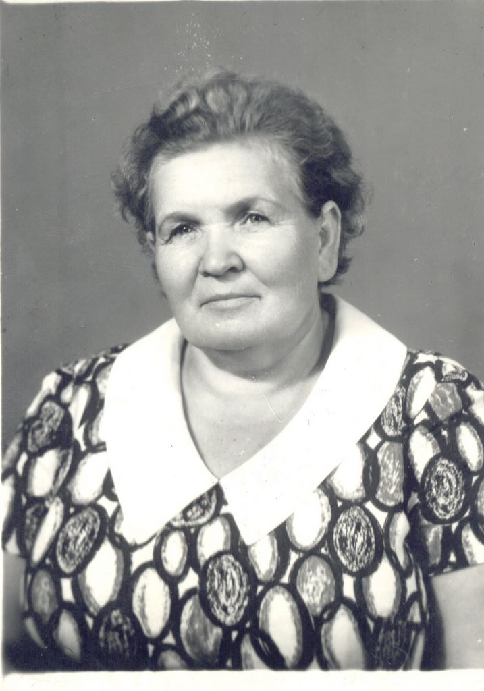

|
|

|
|
Месник (Катюрина) Мария Васильевна
Родилась 22 октября 1919 года
С. Силино, Хреновской волости, Чебсарского уезда, Вологодской губернии
Умерла 11 сентября 2001 года.
Похоронена: Санкт-Петербург, пос. Шушары
Отец Катюрин Василий Александрович
Мать Катюрина (Зибрина) Надежда Прокопьевна
Муж Месник Рафаил Абрамович
Дочь Татьяна 1939 г.р.
Сын Леонид 1942 г.р.
Сын Владимир 1946 г.р.
Сын Михаил 1951 г.р.
В 1935 году поступила, а в 1938 году закончила Вологодскую фельдшерскую школу.
Работала фельдшером в управлении НКВД г.Вологда, пом. санитарного врача в СЭС с. Н.Чигла, п. Таловая.»
|